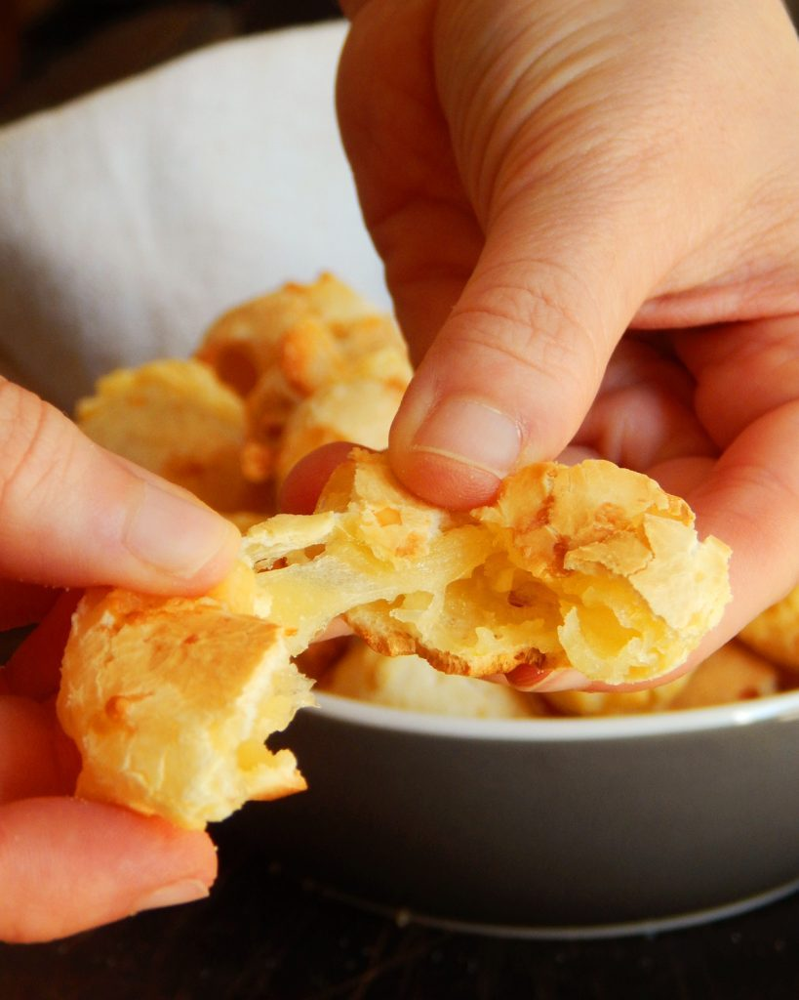
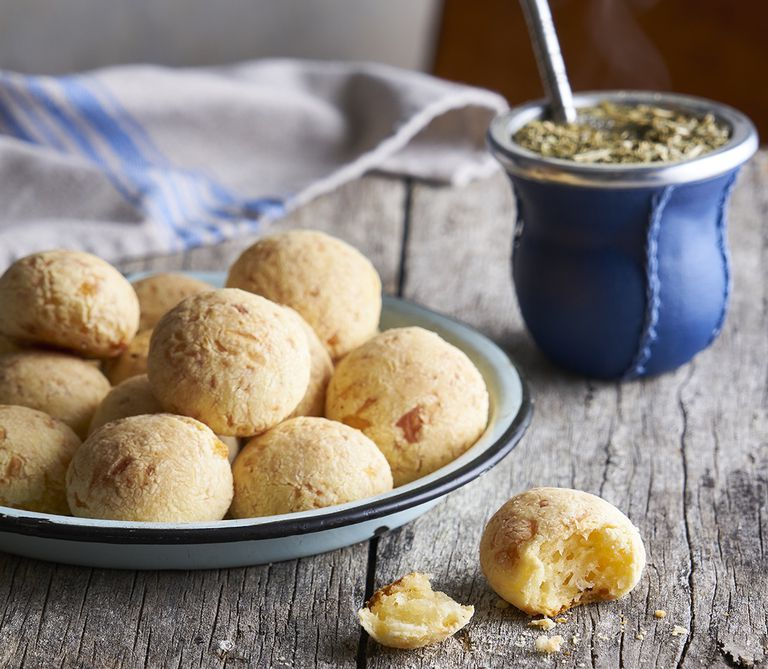

♥ Desde tiempos inmemoriables el Chipa se ha destacado no solo por su delicioso sabor o disputa de donde es originario sino tambien por su simple y muy rapida forma de elavoracion,por eso hoy te traigo esta receta rapida,sencilla y rendidora para que puedas deleitar a los que mas queres o hacerte un festín personal que nada le veo de malo,sin más que agregar,la receta:
Ingredientes
Fécula de Mandioca 300 Gr.
Manteca (Mantequilla) 50 Gr.
Leche 50 Ml.
Jugo de Naranja 50 Ml.
Huevo 2 u.
Sal 1 cdita.
Queso Duro (Sardo) 50 Gr.
Queso Semiduro (Pategras) 150 Gr.
Procedimiento
Cortar los quesos en cubos chicos, también se pueden rallar.
Colocar en un bowl la fécula, sal, leche, juego de naranja y los huevos.
El juego de naranja es opcional, se puede reemplazar por leche.
Agregarlo aporta color y ayuda a lograr una corteza externa más crocante.
Batir a penas para desligar los huevos y agregar la manteca pomada (blanda).
Incorporar bien todos los ingredientes y agregar los quesos.
Utilizar las manos para lograr una masa bien integrada y pareja.
Tomar trozos de masa y formar bolitas con las manos.
Colocarlas sobre una fuente para horno, con una buena distancia entre cada uno y disttribuidos de forma pareja.
Hornear durante 15 minutos a temperatura media-alta (200ºC), en horno precalentado.
Una porción de chipa contiene:
Calorías 348 cal. Carbohidratos 60 gr. Proteínas 9 gr. Lípidos o Grasas 8 gr.
(NOTA:los valores difieren segun receta)
Chipa-datos


El chipa está valorado por la Organización de las Naciones Unidas para la Educación, la Ciencia y la Cultura (UNESCO) como una herencia compartida entre Argentina, Paraguay, Uruguay y Brasil.
Los brasileños lo conocen como pão de queijo, en Bolivia se denomina cuñapé, y en Ecuador y Colombia, pan de yuca y pan de bono, ¡y la lista sigue!
TIPS
¿Se pueden congelar los Chipa?
Sí, lo ideal es congelarlos mientras estén crudos.
Hacer las bolitas, colocar en una fuente y llevar al freezer. Una vez congelados (duros) colocarlos en una bolsa o tupper y conservarlos hasta un mes.
Al momento de hornearlos, precalentar el horno, colocar los chipa en una fuente y hornear directamente, sin descongelar previamente.
• Para mas info chipanera haga click aqui.¿Te animás a probar nuestra versión?